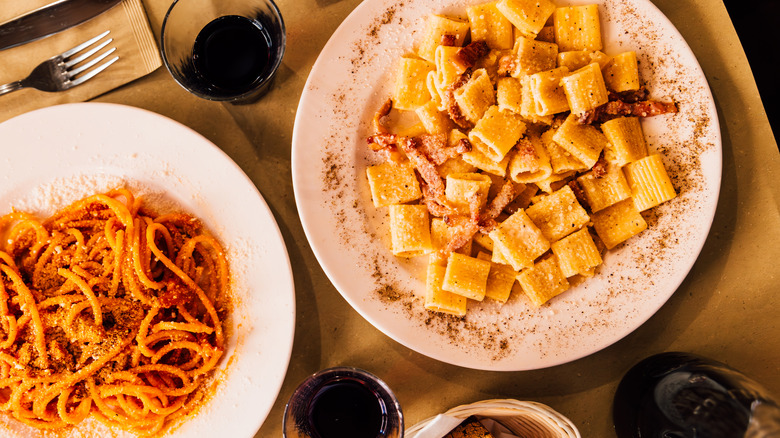
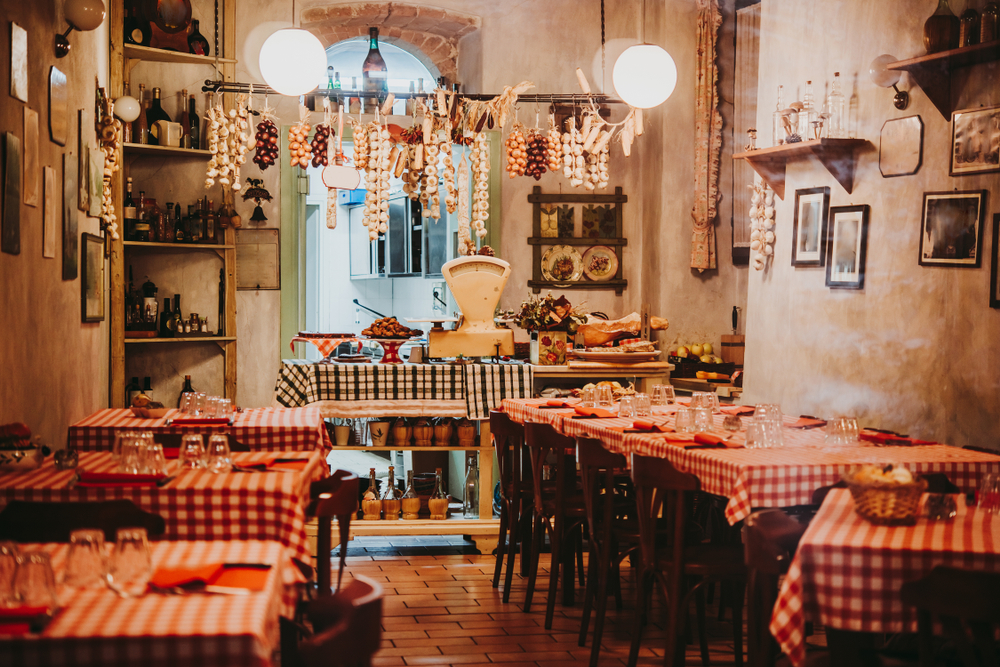
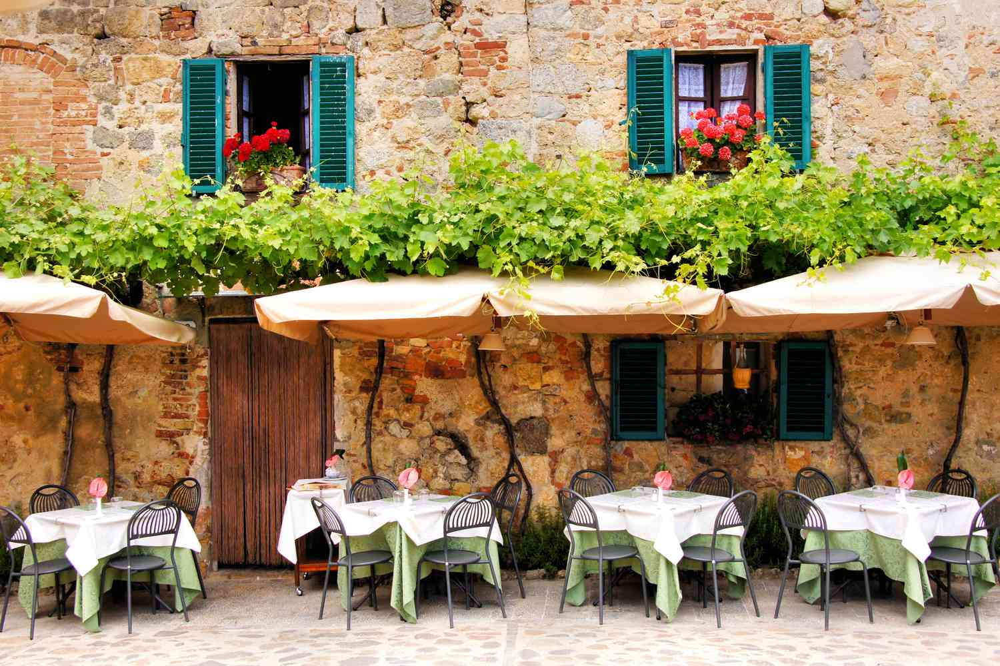
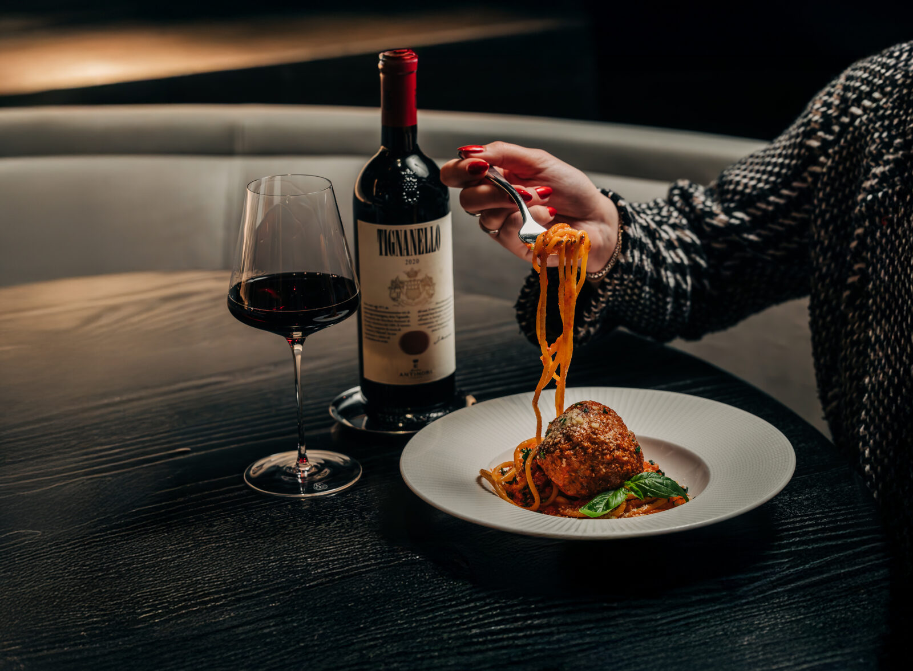

How Spaghetti Became the Most Famous Food in the World
Bryan Vo - October 19, 2025

1. A taste that feels like home
At its core, spaghetti is just pasta, sauce, and maybe a sprinkle of cheese. But that’s the beauty of it. It’s easy to make, affordable, and endlessly customizable. You can turn it into a romantic dinner with meatballs and wine, or a quick midnight snack with garlic and olive oil. It adapts — and that’s exactly why people love it.

2. The Italian touch spread worldwide
When Italian immigrants brought their cuisine to North America and beyond, spaghetti became their culinary ambassador. Over time, it evolved — from spaghetti bolognese in Europe to spaghetti with hot dogs in the Philippines, every culture made it their own twist. It’s not just Italian anymore; it’s everybody’s comfort food.

3. Iconic pop culture moments
Who could forget the romantic spaghetti scene in Lady and the Tramp? Or every viral TikTok of creamy spaghetti recipes? The dish isn’t just eaten — it’s celebrated. Spaghetti made its way into art, film, memes, and even music (yes, “Pastalicious” counts).

4. A plate of nostalgia and love
Maybe that’s why spaghetti feels universal. It reminds us of family dinners, childhood memories, late-night cravings. It’s the dish that connects generations and cultures. No fancy ingredients — just warmth, flavor, and a little bit of chaos in every bite.
For more new and upcoming food spots in Metro Vancouver, follow @TASTEBUDS here , and
subscribe to our
weekly newsletter here.
Address: 305 Alexander St, Vancouver, BC V6A 1C4
Website | Instagram